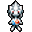
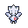

Pokédex / #176

Togetic #176
FairyFlying
It grows dispirited if it is not with kind people. It can float in midair without moving its wings.
Generation 2 · Johto

Stats
| Attack | 40 | |
|---|---|---|
| Defense | 85 | |
| Sp. Atk | 80 | |
| Sp. Def | 105 |
In the wild
| Wild level | 40–50 |
|---|---|
| HP | 55 |
| Experience | 12 |
| Egg groups | Flying, Fairy |
Evolution
- Evolves from Togepi at level 30, with a Soothe Bell.
Moves
| Level | Move | Type | Category | Power | Energy | Cooldown | Effect | |
|---|---|---|---|---|---|---|---|---|
| 1 | Tackle | Normal | Physical | 15 | 15 | 1s | Tackle is one of the most common and basic moves a Pokemon learns. It deals damage with no additional effects. | |
| 5 | Fairy Wind | Fairy | Special | 40 | 50 | 9s | The user stirs up a fairy wind and strikes the target with it. | |
| 10 | Ancient Power | Rock | Special | 60 | 70 | 14s | Ancient Power inflicts damage and has a 10% chance of raising all of the user's stats by one stage. | |
| 15 | Metronome | Normal | Status | – | 80 | 20s | User performs any move in the game at random. | |
| 20 | Covet | Normal | Physical | 60 | 80 | 20s | The user endearingly approaches the target, then steals the target's held item. | |
| 25 | Wish | Normal | Status | – | 100 | 90s | The turn Wish is used, the user will make a wish. At the end of the next turn, the Pokemon will be healed by half its own maximum HP. | |
| 35 | Magical Leaf | Grass | Special | 60 | 60 | 9s | Magical Leaf deals damage and ignores changes to the Accuracy and Evasion stats. | |
| 40 | Sweet Kiss | Fairy | Status | – | 60 | 20s | Sweet Kiss causes the target to become confused. | |
| 45 | Mirror Move | Flying | Status | – | 130 | 25s | Mirror Move copies the target's last move. If there isn't a last move, copy random. | |
| 50 | Double-Edge | Normal | Physical | 120 | 120 | 18s | Double-Edge deals damage and has no secondary effect. | |
| 55 | Magic Coat | Psychic | Status | – | 100 | 90s | Any move is reflected back to the attacker. | |
| 60 | Future Sight | Psychic | Special | 120 | 120 | 15s | Future Sight deals damage, but does not hit until two turns after the move is selected. | |
| 65 | Yawn | Normal | Status | – | 100 | 95s | In the turn that Yawn is used, the only effect will be the user yawning at the target. At the end of the next turn, the target (if still active) will fall asleep unless it gets affected by a major status condition in the meantime, a status-protecting move is used (like Safeguard or Uproar), or the battle ends. | |
| 70 | Last Resort | Normal | Physical | 140 | 140 | 30s | Last Resort does damage and has no secondary effect. |
Field abilities
FlashHeadbutt
Special abilities
HustleSerena Grace
Egg moves
ExtrasensoryForesightFuture SightLucky ChantMirror MoveMorning SunNasty PlotPeckPresentPsycho ShiftSecret PowerStored Power
Technical machines
Aerial AceBideBrick BreakDefense CurlDouble EdgeDouble TeamDrain PunchDream EaterFire BlastFlamethrowerFocus PunchHeadbuttHyper BeamMimicMud SlapPsychicRageRain DanceReflectRestSafeguardShadow BallSolar BeamSteel WingSubstituteSwiftThunder WaveToxicWater PulseZap Cannon
Drops
| Item | Amount | Chance | |
|---|---|---|---|
| bunch of wheat | 1–6 | 87.5% | |
| feather | 1 | 77.8% | |
| downy feather | 1 | 35% | |
| colourful feather | 1 | 14% | |
| royal feather | 1 | 4.67% | |
 | togetic doll | 1 | 0.1% |
| Pixie Plate | 1 | 0.025% | |
| Sky Plate | 1 | 0.025% | |
| Soothe Bell | 1 | 0.02% | |
| TM 10 | 1 | 0.01% | |
| TM 32 | 1 | 0.01% | |
| held pink bow | 1 | 0.01% | |
| held sharp beak | 1 | 0.01% |